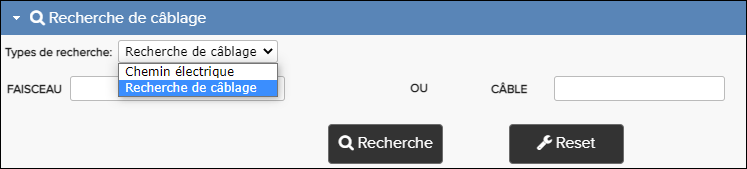
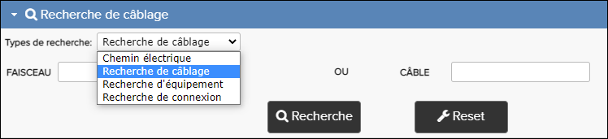
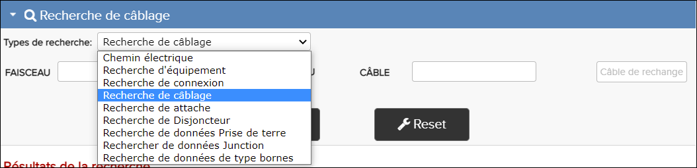

Recherche de câblage - Airbus

Recherche de câblage - C-Series (A220)

Recherche de câblage - Boeing
Le tableau ci-dessous donne des exemples de plusieurs publications et décrit le niveau de support qu’ils ont avec la recherche de câblage Pinpoint.
| Générateur de Publications | Publications de câblage | Types de recherche pris en charge |
|---|---|---|
| A350 | ASM, AWL, AWM | Câblage, Chemin électrique |
| B787 | SSM, WDM | Câblage, Équipment, Connexion |
| C-Series | ASDP, AWDP | Câblage, Équipment, Connexion électrique Chemin électrique |
| S1000D | Any publication which contains Equipment Lists (info code 056), Wire Lists (info code 057), or Bundle Lists (info code 058) | Câblage, Connexion, Équipment |
| KCA | AWL, AWM, ASM (Airbus), WDM, SSM (Boeing) | Airbus: Câblage, Chemin électrique Boeing: Chemin électrique, Équipment, Connexion, Câblage, Attache, Disjoncteur, Prise de terre, Junction, Type bornes |
Pour plus de détails sur la façon d'effectuer une recherche, se référer à Rechercher des chemins électriques.
Pour plus de détails sur la façon d'effectuer une recherche, se référer à Rechercher de connexion.